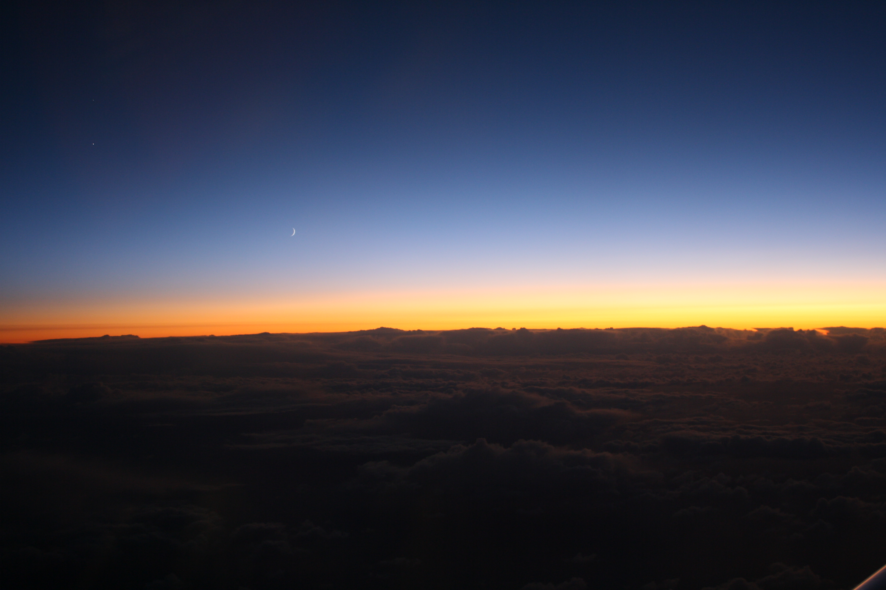
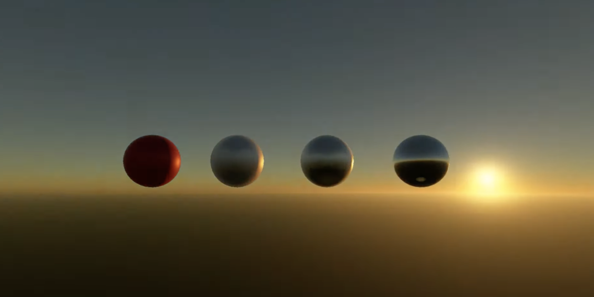
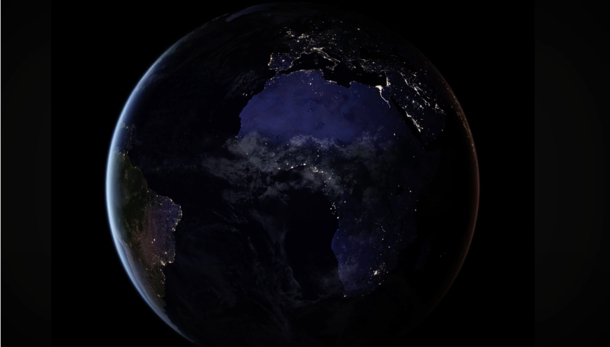
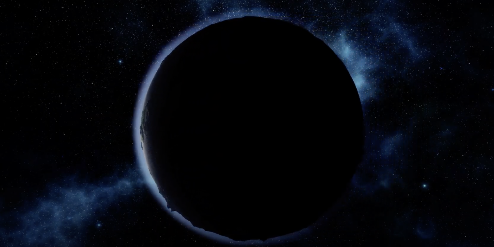
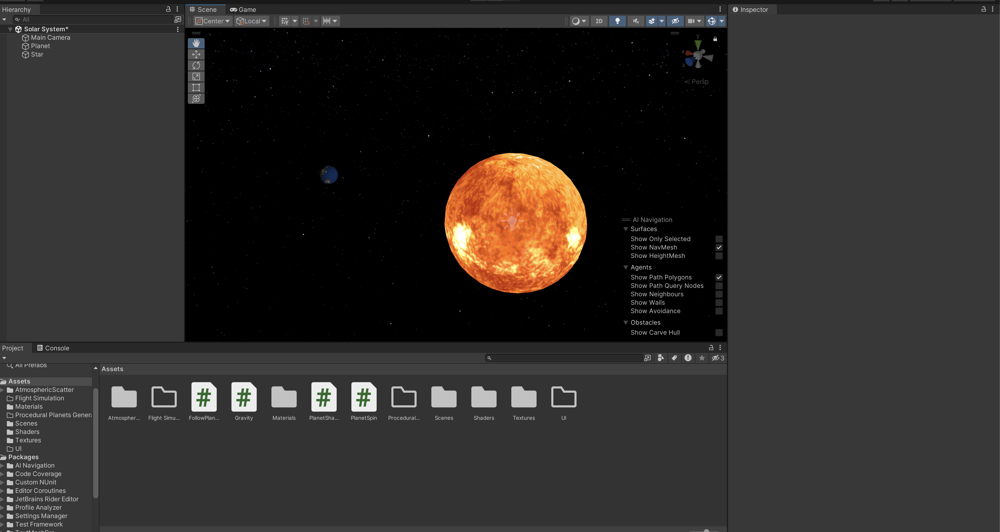

This project aims to create an interactive 3D visualization of
atmospheric scattering, allowing users to explore the various phenomena
associated with the scattering of light in the Earth’s atmosphere such
as Rayleigh scattering, Mie scattering, the resulting colors of the sky
and various atmospheric optical effects.




Goals and Deliverables
Goals:
The primary objective of this project is to create a realistic and
interactive 3D visualization of atmospheric scattering,
allowing users to explore various scattering phenomena and their
effects on sky color and atmospheric optical effects.
To achieve this, we have identified several key goals that will guide
the development of our visualization:
Sky color gradient: Implement a smooth gradient demonstrating the
color changes of the sky due to atmospheric scattering at various times
of the day.
The Tyndall effect: Visualize the scattering of sunlight by small
particles in the air, which causes the sky to appear blue.
Sunset and sunrise: Display the vibrant colors resulting from the
longer path of sunlight through the atmosphere during these
times.
Atmospheric optical effects: Create visualizations of phenomena
like halos, coronas, and rainbows, which result from scattering and
refraction of light.
Baseline plan (4.0):
Implement the Nishita algorithms for simulating atmospheric
scattering.
Implement a 3D interactive visualization of atmospheric
scattering using the graphics engine Unity.
Create an intuitive user interface allowing users to explore
different scattering phenomena and their effects on sky color and
atmospheric optical effects.
Develop a flight simulation mode that allows users to navigate
through the atmosphere and the space, experiencing the effects of
atmospheric scattering.
Optional extensions:
Advanced Atmospheric Effects:
Implement more advanced atmospheric effects, such as clouds, rain,
rainbow.
Incorporate spectral rendering to simulate wavelength-dependent
scattering.
Procedural Planets Generation System:
Design and implement an efficient procedural terrain generation
algorithm.
Integrate the procedural planet generation system into a game
engine.
Procedural Flora:
Integrate procedural generation techniques to create varied flora on
the planets.
Schedule
Week 1 (28 April - 5 May):
Learn and explore Unity basics, focusing on its rendering and shader
capabilities.
Research the Nishita model and algorithms and implement them.
Week 2 (5 May - 12 May)
(Milestone report):
Prepare the 3D models and the environment in Unity: create the sun,
the planets, the stars and other relevant celestial bodies.
Set up the basic lighting and atmospheric scattering effects based
on the algorithms implemented during week 1.
Week 3 (12 May - 19 May):
Design and implement the User Interface.
Integrate the UI with the 3D visualization in Unity.
Start working on optional features.
Week 4 (19 May - 26 May):
Continue working on the optional features.
Test and debug the project.
Address any unexpected issues or problems during the implementation phase.
Week 5 (26 May - 2 June)
(Final Week):
Prepare documentation and presentation.
Write the final report.
Milestone Report

Initially, we faced several challenges in utilizing the Unity engine due to our unfamiliarity with it.
However, since then our progress has noticeably improved and we feel more confortable with the engine.
We have Incorporated celestial bodies such as planets, moons, and a sun.
We have applied corresponding textures to these entities for both daytime and nighttime scenarios.
We've developed scripts to emulate the movement of these celestial bodies and ensure the camera effectively tracks each planet.
We have created a shaders to facilitate ray scattering. While we have developed the necessary auxiliary functions for implementation,
we are still refining our understanding of its proper implementation.
Given the consideration of our timeline, we have determined that the inclusion of procedural planets
would consume a substantial amount of time that we unfortunately lack.
We have elected to incorporate a flight simulator by creating a model 'spaceship' and developing a script that enables movement within the solar system.
We are in the process of designing a user interface for interaction with the properties of the atmosphere.